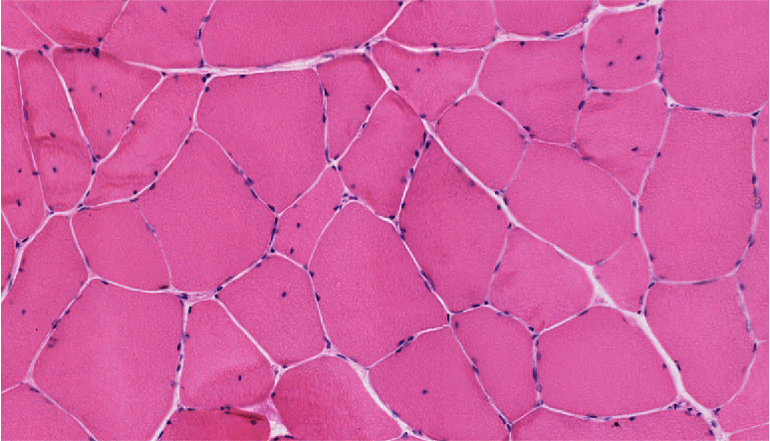
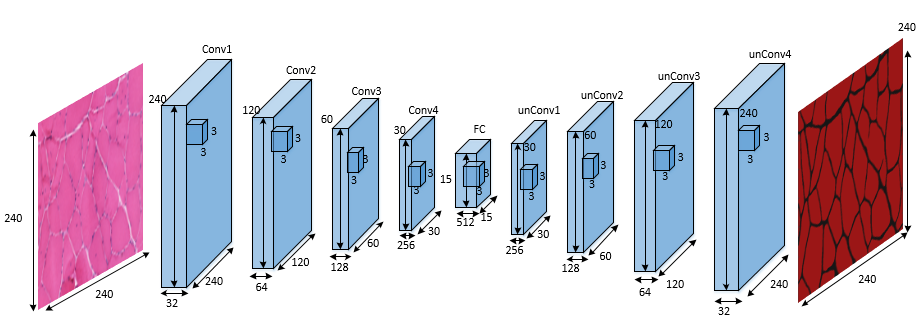
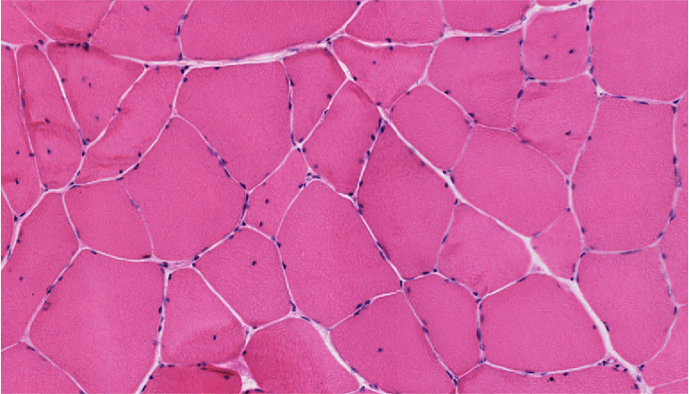
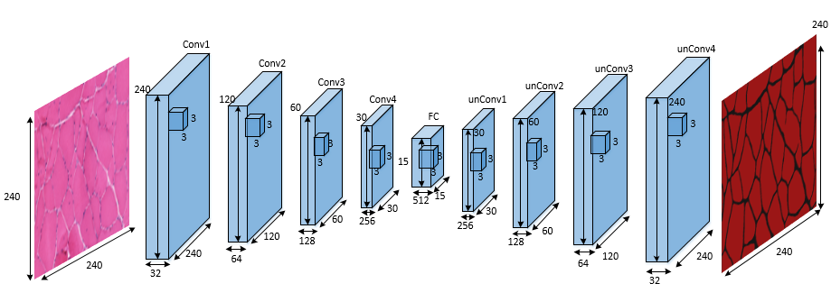
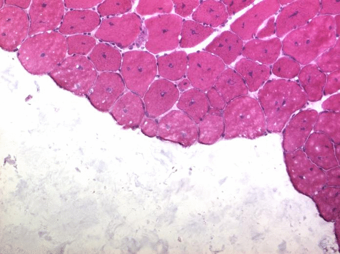

|
Based on medical image data provided by BICI2 lab, implemented fully connected network edge detection methods with watershad as post-proecess and got a better detection and segmentation results compared with random forest method. Now working on residual neural network to achieve better result and keep digging on deep learning. |
Random Forest Muscle Cell Segmentation:
|  |
Developed a cpp software implementation of an image segmentation algorithm based on Random Forest Machine Learning algorithm, for Muscle Cell Image gathered from University of Florida Shands Hospital. Combined with HOG(Histogram of oriented gradients) for feature extraction, UCM Segmentation algorithm, Watershed and self-defined Hierarchical segmentation framework for segmentation, this cpp dll-call software works quite well for our muscle cell data and totally get rid of matlab dependency. |
Classifying cognitive states from fMRI brain images data :

|
Built a machine learning model which combines with multiple machine learning algorithms for classifying cognitive states from fMRI brain image data. Researched on application of using machine learning technique to discern cognitive states in human brain. The fMRI data was originally collected by Marcel Just and his colleagues in Carnegie Mellon University's CCBI. |
Python Flask Online Cell Contour Annotation:

|
Using python FLASK framework as back-end to build up a website, which shows our recent accomplishments on Cell-Image Segmentation Research. And allows everyone to modify the contour as groundtruth for further training in deep learning. With Flask's strong server-client interaction functionality, visitors would be able to modify the contour of cell online and re-submit it back to server. To make it more interactive, we use deep zoom package, paper.js and openseadragon as well. |